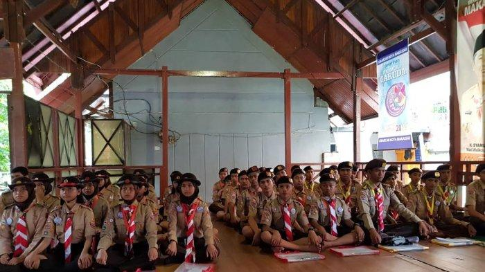
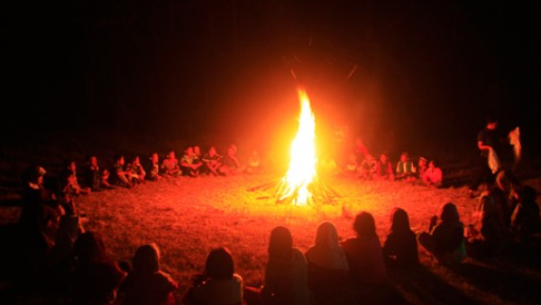
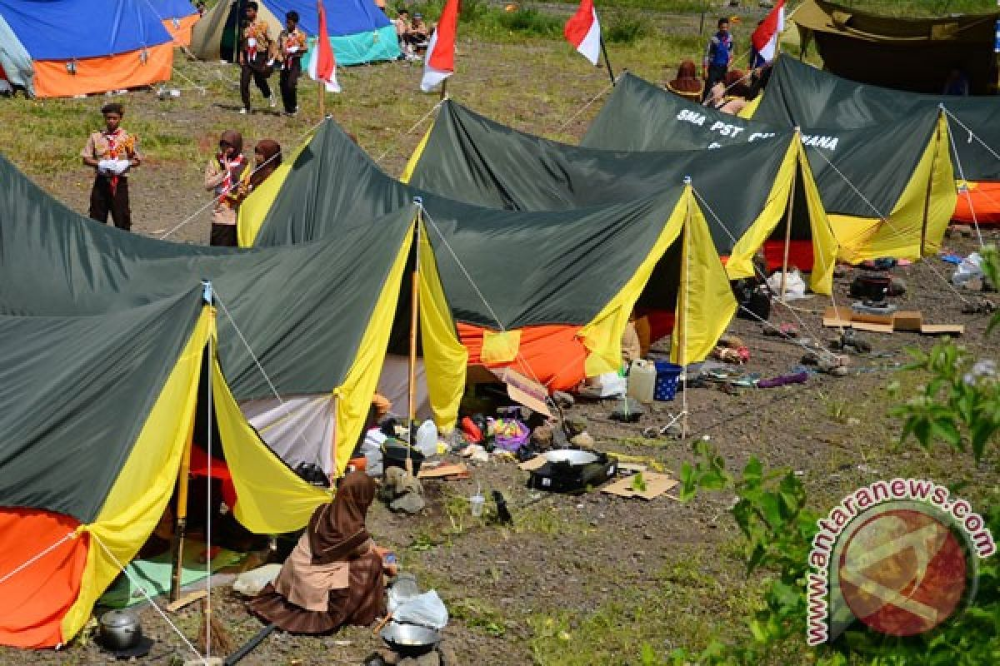
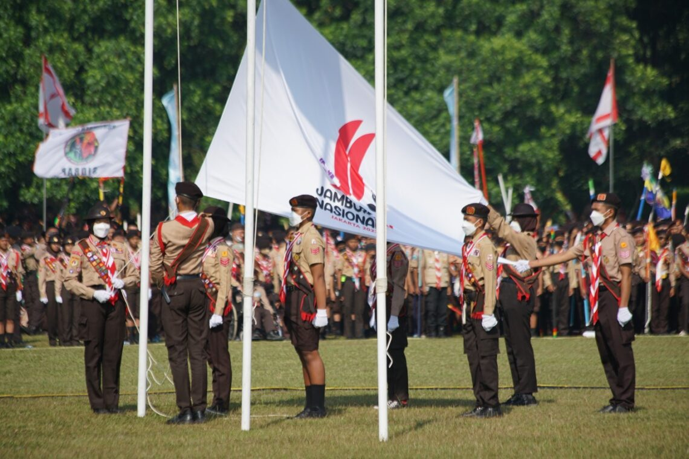
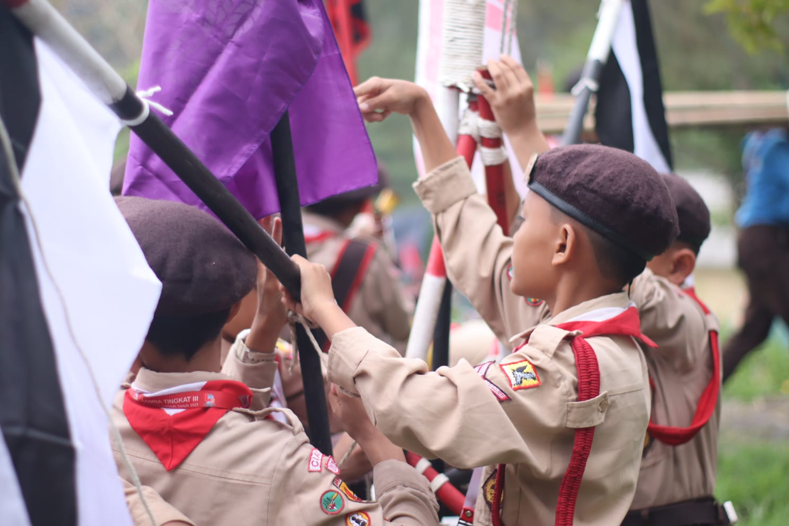
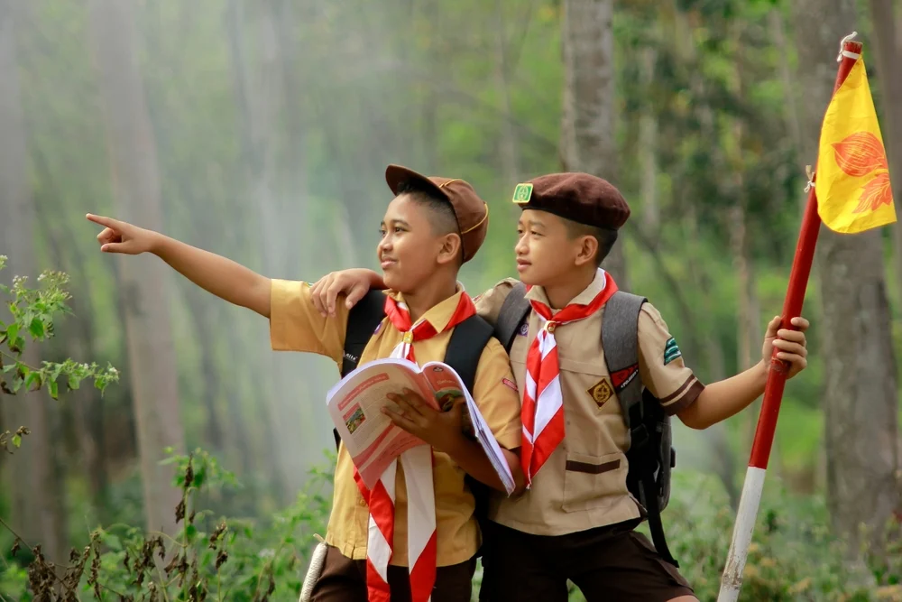
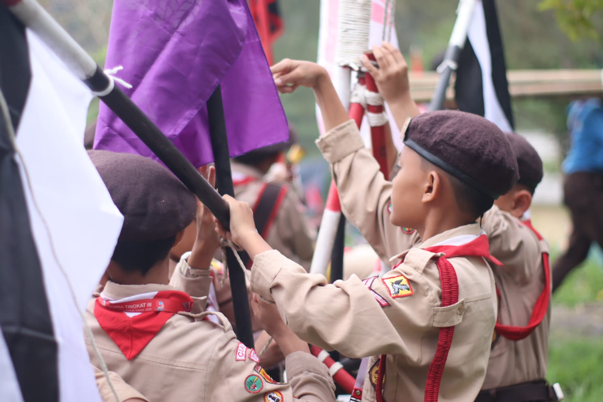
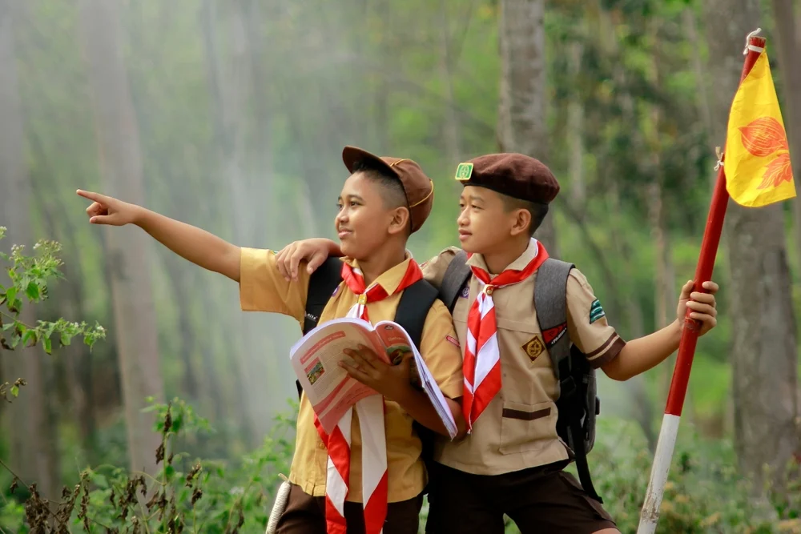

Galeri Kegiatan
Berikut beberapa kegiatan rutin dan tahunan kami yang membentuk karakter, keterampilan, dan jiwa kepemimpinan anggota.
Dokumentasi Kegiatan




Perkemahan Tahunan
Kegiatan ini melibatkan seluruh anggota untuk membangun kekompakan, bertahan hidup di alam, dan mengasah kemampuan dasar kepramukaan.
Pelatihan Kepemimpinan
Melatih anggota menjadi pemimpin yang tangguh, berani, dan bertanggung jawab dalam tim.

 



Minggu Rutinan
Kegiatan ini bertujuan untuk meningkatkan keterampilan, penegetahuan dan karakter setiap anggota pramuka, serta menjujung tinggi kebersamaan dan kedisiplinan.
Pelantikan
Salah satu momen penting yang melewati berbagai tahap dalam perjalanan seorang anggota pramuka. Pelantikan adalah proses resmi seseorang menjadi bagian dari Gerakan Pramuka.